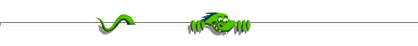

This is the default landing page for new installations. Seeing this means the web server is working and the owner has not set up any pages of their own yet.
The web server is BusyBox httpd, started and supervised by Finit, running on a system created using Buildroot. For more information on this setup, see: